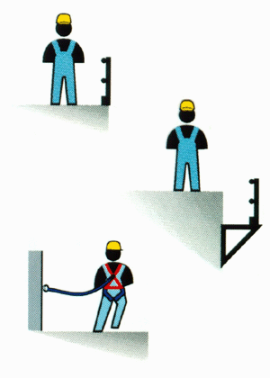

Erstens
Der Absturz von Personen ist durch Absturzsicherungen zu verhindern wie:
Zweitens
Kann aus arbeitstechnischen Gründen
keine Absturzsicherung verwendet
werden, sind Auffangeinrichtungen zu benutzen, wie:
Drittens
In Ausnahmefällen ist Anseilschutz
zugelassen.